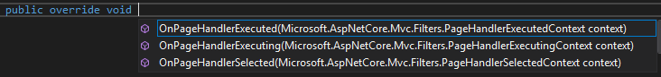

Filters are centralised units of code that can be registered to execute at various points during Razor pages processing. The Razor Pages framework includes a range of built in filters to ensure that requests are served over HTTPS, that requests are authenticated and to managed client-side caching of responses. You can also write your own filters to execute custom logic.
Razor Page Lifecycle
Once a URL has been matched to a page, the correct handler method is selected. Bindable PageModel properties and parameters to the handler method are bound by the model binder. Then the handler method is executed returning a response. Razor Pages filters implement IPageFilter or its async equivalent, IAsyncPageFilter. These interfaces expose methods that enable you to execute code before the handler is selected, after it has been selected but before it has been executed, and after it has been executed:
IPageFilter
| Method | Description |
|---|---|
OnPageHandlerSelected(PageHandlerSelectedContext) |
Handler method has been selected. Model binding has not taken place |
OnPageHandlerExecuting(PageHandlerExecutingContext) |
Model binding completed. Handler has not been executed |
OnPageHandlerExecuted(PageHandlerExecutedContext) |
Handler method has been executed. |
IAsyncPageFilter
| Method | Description |
|---|---|
OnPageHandlerSelectionAsync(PageHandlerSelectedContext) |
Handler method has been selected. Model binding has not taken place |
OnPageHandlerExecutionAsync(PageHandlerExecutingContext, PageHandlerExecutionDelegate) |
Model binding completed. Handler has not been executed |
The various *Context parameters passed in to these methods provide access to the current HttpContext. This makes filters particularly suitable for cross-cutting logic that requires access to the HTTP Request or Response, such as code that needs to work with cookies, headers etc.
Using Filter Methods in a PageModel
The Razor Pages PageModel class implements both IPageFilter and IAsyncPageFilter, meaning that you can override all the methods detailed above in the PageModel class:

If you also implement the async methods, they will execute instead of their non-async equivalents.
The context parameter provides information about the current handler method enabling you execute code conditionally based on the method being selected or executed:
public override void OnPageHandlerSelected(PageHandlerSelectedContext context)
{
if(context.HandlerMethod.MethodInfo.Name == nameof(OnGet))
{
// code placed here will only execute if the OnGet() method has been selected
}
}
Creating A Custom Filter
Overriding IPageFilter methods in a PageModel is not particularly re-usable especially if you want to have your filter methods executed globally i.e. on every request. What you can do instead is to create a class that derives from PageModel and then have your actual PageModel classes inherit from that instead of from PageModel:
public class BasePageModel : PageModel
{
public override void OnPageHandlerSelected(PageHandlerSelectedContext context)
{
//...
}
public override void OnPageHandlerExecuting(PageHandlerExecutingContext context)
{
//...
}
}
public class IndexModel : BasePageModel
{
public void OnGet()
{
//...
}
}
This approach is valid enough, but an alternative approach is to create a class that implements IPageFilter (or IAsyncPageFilter if asynchronous processing is required) and then register this globally.
The following example features an asynchronous filter that obtains the IP Address of the visitor and uses it to perform a geographical lookup. The first element is a service class that utilises the free ipstack API to obtain geographical information about an IP address:
public interface IGeoService
{
Task<string> GetCountry(string ipAddress);
}
public class GeoService : IGeoService
{
public async Task<string> GetCountry(string ipAddress)
{
using (var client = new HttpClient())
{
var json = await client.GetStringAsync($"http://api.ipstack.com/${ipAddress}?access_key=<your api key>");
dynamic data = Newtonsoft.Json.JsonConvert.DeserializeObject(json);
return data.country_code;
}
}
}
The filter class will make use of this service. The only operation exposed by the service class is async so the filter class will need to implement IAsyncPageFilter:
public class CustomPageFilter : IAsyncPageFilter
{
private readonly IGeoService _geoService;
public CustomPageFilter(IGeoService geoService)
{
_geoService = geoService;
}
public async Task OnPageHandlerSelectionAsync(PageHandlerSelectedContext context)
{
await Task.CompletedTask;
}
public async Task OnPageHandlerExecutionAsync(PageHandlerExecutingContext context, PageHandlerExecutionDelegate next)
{
var ipAddress = context.HttpContext.Request.Host.ToString();
var countryCode = await _geoService.GetCountry(ipAddress);
// do something with countryCode
await next.Invoke();
}
}
The filter is registered globally in the ConfigureServices method in Startup.cs along with the service by adding to MvcOptions.Filters:
public void ConfigureServices(IServiceCollection services)
{
...
services.AddMvc(options =>
{
options.Filters.Add(new CustomPageFilter(new GeoService()));
}).SetCompatibilityVersion(CompatibilityVersion.Version_2_1);
services.AddTransient<IGeoService, GeoService>();
...
}
This filter will execute on every page request. If you want to apply the filter to a subset of pages, you have a couple of options. if all the affected pages are located in the same folder, you can apply the filter to the contents of the folder by using the AddFolderApplicationModelConvention:
services.AddMvc()
.AddRazorPagesOptions(options =>
{
options.Conventions.AddFolderApplicationModelConvention("/folder_name", model => model.Filters.Add(new CustomPageFilter(new GeoService())));
}).SetCompatibilityVersion(CompatibilityVersion.Version_2_1);
The other option is to create a filter attribute and apply it to PageModel classes selectively.
Creating A Filter Attribute
Attributes enable you to declaratively apply behaviour to PageModels. In this example, the code that forms the body of the OnPageHandlerExecutionAsync method in the global filter will be moved to an attribute that derives from ResultFilterAttribute:
public class CustomFilterAttribute : ResultFilterAttribute
{
public override async Task OnResultExecutionAsync(ResultExecutingContext context, ResultExecutionDelegate next)
{
IGeoService geoService = context.HttpContext.RequestServices.GetService<IGeoService>();
var ipAddress = context.HttpContext.Request.Host.ToString();
var countryCode = await geoService.GetCountry(ipAddress);
var result = (PageResult)context.Result;
result.ViewData["CountryCode"] = countryCode;
await next.Invoke();
}
}
This example has been enhanced to illustrate how to access the ViewData property and set a value from within an attribute. The ResultFilterAttribute is an MVC artefact which when used in an MVC application can be applied to action methods or controller classes. In Razor Pages, it can only be applied to PageModel classes. It cannot be applied to handler methods:
[CustomFilter]
public class ContactModel : PageModel
{
...
}
This example also illustrates the use of the Service Locator pattern to access an instance of IGeoService from within the filter (the RequestServices.GetServices method). This is mainly used in this example to keep things simple, but the Service Locator approach is considered an anti-pattern and there are alternative, more robust approaches to references dependencies from within filters.
The ResultFilterAttribute enables access to the Model via the context.Result.Model property. The Result property must be cast to a PageResult in order for that to work in the same way as the ViewData property is accessed above.